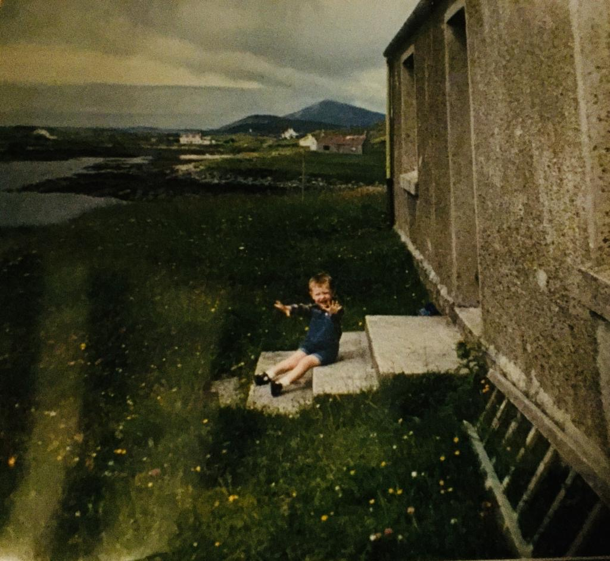

Gaelic Articulation Study
This page is here to provide information for people who may be interested in taking part in a Gaelic articulation study.

Who I Am
My name is Paul McGuire. I’m a PhD student in linguistics, enrolled jointly at National Tsing Hua University in Taiwan and Macquarie University in Australia through a cotutelle programme. I completed an MA in linguistics a couple of years ago, and my work focuses mainly on articulatory phonetics. My previous work has involved articulatory studies of L2 English, Vietnamese, and Bunun.
I’m originally from the outskirts of Glasgow, but I moved to the North of England a few months before I turned twelve. My gran, born Annie Gillies, was a native speaker of Gaelic from Skye. I’ve been slowly chipping away at learning Gaelic myself for a couple of years now; it’s not coming easily, but I’m enjoying the process.
Articulation Study
This study looks at how Gaelic speakers use and coordinate their tongue, lips, and jaw when speaking Gaelic. These movements will be recorded using electromagnetic articulography (EMA).
Much of the articulatory data collected in speech research has come from widely spoken languages such as English and Mandarin Chinese, while very little has been collected for Gaelic. Articulatory data can tell us things about how speech sounds are produced that may be difficult to recover from the acoustic signal alone.
This study provides an opportunity to document Gaelic articulatory patterns in greater detail and to better understand how particular speech sounds are produced. I hope that it can contribute to our understanding of the phonetics and phonology of Gaelic. I also hope that, by providing information that could eventually be useful in language teaching or revitalisation efforts, it may make a small contribution to the preservation of the language.
Participants
For the first phase of the study, I am hoping to work with native speakers of Gaelic.
By native speaker, I mean:
- You learned Gaelic from one or more of your parents or caregivers during childhood.
- You continue to use Gaelic in daily life, for example with family, friends, or in your community.
I’m aware that the term “native speaker” can be a bit problematic, and I don’t mean to imply that any speaker is “better” or “more authentic” than another. The reason studies like this recruit people who learned Gaelic from their parents is that there may be slightly different articulatory characteristics associated with this group, even in comparison to people who speak very fluently but learned later. In later phases of the study, I also hope to include people who have gone through Gaelic-medium education or who have learned Gaelic to fluency.
What Participation Will Involve
If you decide to take part:
- You will be asked read aloud sentences in Gaelic while small sensors are attached to your tongue, lips, and jaw. This can feel a bit strange to begin with, but it’s not painful. These sensors are connected by thin wires to a recording system that tracks your articulatory movements in real time.
- The session should take less than two hours.
- You will receive a small payment as compensation for your time.
Here is a video from the Yale Phonetics Lab showing researchers carrying out an EMA experiment in Ghana.
I understand that the vast majority of native Gaelic speakers were not taught to read or write Gaelic in school. For each sentence, you’ll be repeating the same structure with just one word changing. The word can be displayed in Gaelic orthography, or, if easier, a picture can be shown on the screen to act as a reminder.
I also want to emphasise that if you learned Gaelic from your parents and spoke it as a child, your Gaelic is considered native, even if your dialect differs from someone else’s. There is no test component to the study, and it is not about judging anyone’s grammar, vocabulary, or “correctness”. The focus is simply on how words are articulated in your dialect. The task only involves repeating sentences while your speech movements are recorded.
If you are able to take part, I will do my best to arrange a recording session in a location that is convenient for you. This could be your home or another suitable space. I am exploring different options to make participation as straightforward as possible for everyone who is able to take part.
Project Supervisors
- Feng-fan Hsieh, National Tsing Hua University, Taiwan
- Michael Proctor, Macquarie University, Australia
Contact
If you have any questions about what the experiment involves, the recording setup, safety, or anything else at all, please do not hesitate to get in touch.
You can contact me at: graemepaulmcguire [at] gmail.com, or at graemepaul.mcguire [at] students.mq.edu.au.
You can also find me on ORCID and ResearchGate.